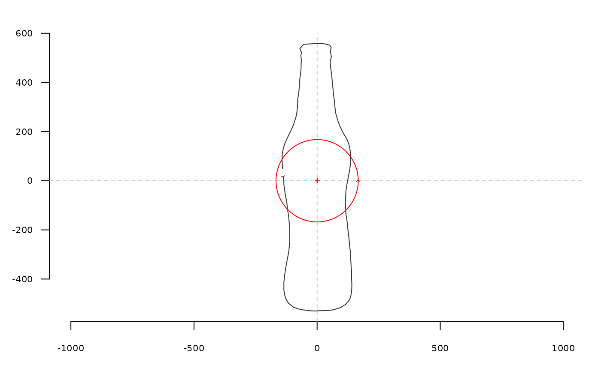

sfourier_i uses the inverse radii variation (equally spaced curvilinear abscissa) transformation to
calculate a shape, when given a list with Fourier coefficients, typically
obtained computed with sfourier.
Arguments
- rf
A
listwithao,anandbncomponents, typically as returned bysfourier.- nb.h
integer. The number of harmonics to calculate/use.- nb.pts
integer. The number of points to calculate.- dtheta
logical. Whether to use the dtheta correction method.FALSEby default. WhenTRUE, tries to correct the angular difference between reconstructed points; otherwise equal angles are used.
Value
A list with components:
- x
vectorofx-coordinates.- y
vectorofy-coordinates.- angle
vectorof angles used.- r
vectorof radii calculated.
References
Renaud S, Pale JRM, Michaux JR (2003): Adaptive latitudinal trends in the mandible shape of Apodemus wood mice. J Biogeogr 30:1617-1628.
See also
Other sfourier:
sfourier(),
sfourier_shape()
Examples
coo <- coo_center(bot[1]) # centering is almost mandatory for sfourier family
coo_plot(coo)
rf <- sfourier(coo, 12)
rf
#> $an
#> [1] 4.604028e-03 -2.999389e-01 -9.402145e-04 1.149290e-02 7.204731e-03
#> [6] -9.029436e-03 -3.801153e-04 -3.509909e-03 3.066128e-03 -1.605563e-04
#> [11] -5.282196e-05 -2.663480e-03
#>
#> $bn
#> [1] -5.890572e-03 3.958517e-02 -7.064423e-03 -2.988931e-03 1.291082e-02
#> [6] 2.814025e-03 -1.504084e-03 5.682629e-04 5.198896e-03 -3.561684e-05
#> [11] -1.358067e-03 2.234144e-03
#>
#> $ao
#> [1] 334.5633
#>
#> $r
#> [1] 139.1167 135.1134 135.8741 136.8427 141.0323 143.5802 151.2095 162.8116
#> [9] 175.5101 182.5204 198.0176 214.4721 223.4262 241.8735 260.7074 269.7883
#> [17] 289.8301 310.0117 320.9760 342.0111 363.0862 373.1664 393.9569 415.7375
#> [25] 436.2997 445.8192 465.8759 484.9159 494.7304 512.1917 523.5711 525.7951
#> [33] 528.7641 528.6261 529.8403 529.9849 528.9630 529.2840 529.5332 529.6230
#> [41] 526.6029 525.3373 516.8135 501.5361 492.0222 473.0432 453.3357 442.8940
#> [49] 422.7064 402.9506 393.5883 373.2914 353.4743 342.9622 323.7894 303.5315
#> [57] 283.8734 274.5648 254.3851 234.8608 225.9056 207.4851 188.9917 179.2651
#> [65] 163.2102 148.4020 142.2876 131.8906 124.2115 121.7441 122.3408 126.4329
#> [73] 133.8555 138.8126 149.4057 160.3977 165.1035 178.0327 190.2983 196.3891
#> [81] 207.9233 218.2629 225.0539 239.8685 256.5975 274.7171 283.4915 303.0400
#> [89] 323.0170 333.5460 353.5262 373.8148 383.4986 404.8965 425.3750 435.1409
#> [97] 455.5781 476.1955 487.0166 508.4428 526.8989 546.1072 554.4755 557.9344
#> [105] 558.1869 558.1342 557.6074 557.8729 556.8590 542.6716 524.9317 515.3814
#> [113] 494.2988 473.6200 462.7267 442.2440 421.9866 401.6471 390.8306 370.6053
#> [121] 350.7010 341.4100 321.0176 301.2409 290.9421 272.0980 254.7364 246.6077
#> [129] 230.9259 217.6545 212.0765 201.6712 191.0722 180.1960 174.3784 163.0992
#> [137] 152.9502 148.4252
#>
rfi <- sfourier_i(rf)
coo_draw(rfi, border='red', col=NA)
